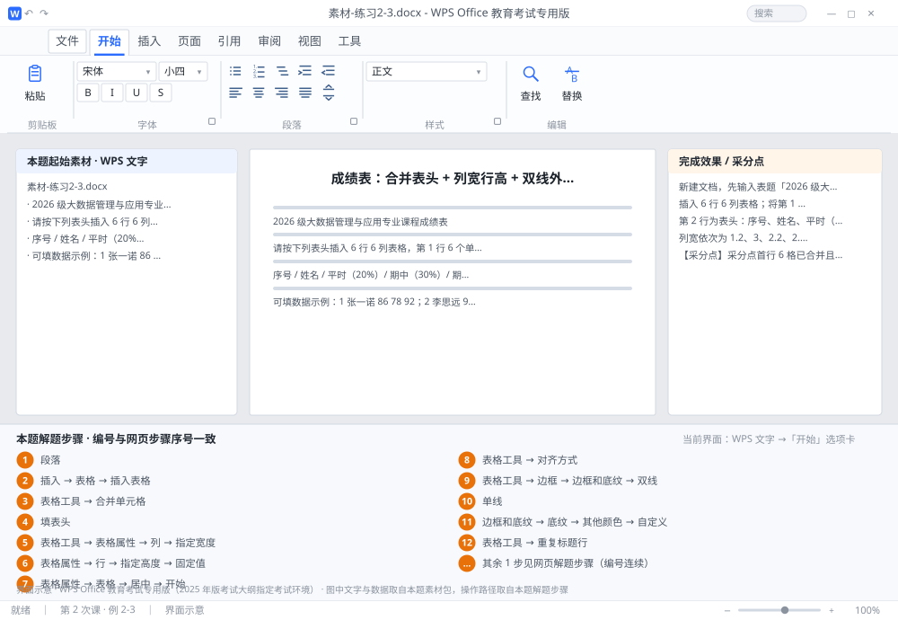

完成比对文档 · 例 2-3
成绩表：合并表头 + 列宽行高 + 双线外框 + RGB 底纹 + 重复标题行 ｜ 第 2 次课 / WPS 文字 ｜ 网页：实操-文字2.html ｜ 考试环境：WPS Office 教育考试专用版（2025 年版考试大纲指定考试环境）
用途 本页按修订后的题目要求与解题步骤生成，是交卷自查的结果基准：
逐项列出每一步应出现的可复核结果，配合模拟操作截图与解题结果文件使用。
它不是素材包的一部分，不会预置答案动作；起始素材仍从本题素材包下载。
一、本题起始素材包
目录：练习素材/练习2-3-表格边框与底纹/ ｜
下载包：练习素材/下载/练习2-3-表格边框与底纹.zip
二、题目要求
- 新建文档，先输入表题「2026 级大数据管理与应用专业课程成绩表」（三号黑体、居中、段后 0.5 行），再插入表格。
- 插入 6 行 6 列表格；将第 1 行 6 个单元格合并，填入表题（三号黑体、居中）。
- 第 2 行为表头：序号、姓名、平时（20%）、期中（30%）、期末（50%）、总评。
- 列宽依次为 1.2、3、2.2、2.2、2.2、2.2 厘米；行高 1 厘米（固定值）。
- 表格整体居中；所有单元格内容水平垂直居中。
- 边框：外框 1.5 磅双线，内框 0.75 磅单线。
- 表头行底纹：RGB（217, 226, 243）；并设置重复标题行。
- 保存为 学号-姓名-练习2-3.docx。
三、解题步骤（编号与下方核对表、截图编号一致）
- 新建并写表题。Ctrl+N → 输入表题 → 三号黑体、居中 →「段落」对话框设段后 0.5 行。
- 插入表格。「插入」→「表格」→「插入表格」→ 列数 6、行数 6 → 确定。（不要用鼠标在网格上划，行列数容易差一个。）
- 合并首行。选中第 1 行全部 6 个单元格 →「表格工具」→「合并单元格」→ 输入表题 → 三号黑体、居中。
- 填表头。第 2 行依次填：序号 / 姓名 / 平时（20%）/ 期中（30%）/ 期末（50%）/ 总评。
- 设列宽。选中第 1 列任意单元格 →「表格工具」→「表格属性」→「列」选项卡 → 勾选「指定宽度」→ 填 1.2 厘米 → 确定；其余 5 列照做（3 / 2.2 / 2.2 / 2.2 / 2.2）。必须用属性对话框，拖标尺只能看个大概。
- 设行高。选中整个表格 →「表格属性」→「行」→ 勾选「指定高度」→ 1 厘米 → 行高值选「固定值」→ 确定。
- 表格居中。选中表格 →「表格属性」→「表格」选项卡 → 对齐方式「居中」→ 确定。这里是表格居中，不是「开始」选项卡里的段落居中按钮。
- 单元格对齐。选中整个表格 →「表格工具」→「对齐方式」→ 点九宫格正中间那一格（水平居中 + 垂直居中）。
- 设外框。选中表格 →「表格工具」→「边框」→「边框和底纹」→ 线型选「双线」、宽度 1.5 磅 → 在右侧预览图上依次点上、下、左、右四条外框线。
- 设内线。同一对话框内改线型「单线」、宽度 0.75 磅 → 点预览图的内部横线、内部竖线两个按钮 → 确定。
- 设底纹。选中第 2 行（表头）→「边框和底纹」→「底纹」选项卡 → 填充选「其他颜色」→「自定义」→ 依次输入 R 217、G 226、B 243 → 确定 → 确定。
- 设重复标题行。选中第 2 行（或光标置于该行）→「表格工具」→「重复标题行」。表格跨页时表头会自动重复。
- 保存。F12 另存为 学号-姓名-练习2-3.docx。
四、完成效果 / 采分点
采分点首行 6 格已合并且表题为三号黑体居中 · 6 列列宽分别为 1.2/3/2.2/2.2/2.2/2.2 厘米 · 行高 1 厘米且为固定值 · 表格经「表格属性」居中 · 单元格水平+垂直居中 · 外框 1.5 磅双线、内线 0.75 磅单线 · 表头底纹 RGB(217,226,243) · 已设重复标题行
五、逐项完成核对表
| 步骤 | 关键操作路径 | 应出现的结果（可复核） |
|---|
| 1 | 新建并写表题 | 「段落」、0.5 行 |
| 2 | 插入表格 | 「插入」、「表格」、「插入表格」 |
| 3 | 合并首行 | 1 行、「表格工具」、「合并单元格」 |
| 4 | 填表头 | 2 行、20%、30%、50% |
| 5 | 设列宽 | 「表格工具」、「表格属性」、「列」、「指定宽度」、1.2 厘米 |
| 6 | 设行高 | 「表格属性」、「行」、「指定高度」、1 厘米、「固定值」 |
| 7 | 表格居中 | 「表格属性」、「表格」、「居中」、「开始」 |
| 8 | 单元格对齐 | 「表格工具」、「对齐方式」 |
| 9 | 设外框 | 「表格工具」、「边框」、「边框和底纹」、「双线」、1.5 磅 |
| 10 | 设内线 | 「单线」、0.75 磅 |
| 11 | 设底纹 | 2 行、「边框和底纹」、「底纹」、「其他颜色」、「自定义」 |
| 12 | 设重复标题行 | 2 行、「表格工具」、「重复标题行」 |
| 13 | 保存 | F12、学号-姓名-练习2-3.docx |
六、模拟操作截图

界面示意 · WPS Office 教育考试专用版 · 橙色编号与本题解题步骤序号一致；
图中文字与数据取自本题素材包，功能入口取自本题解题步骤。
核对方法：按网页解题步骤完成并另存自己的成稿后，逐行比对本表第 3 列的
参数、公式、区域、文件名与对象数量；再对照网页「完成效果 / 采分点」检查版式是否一致。